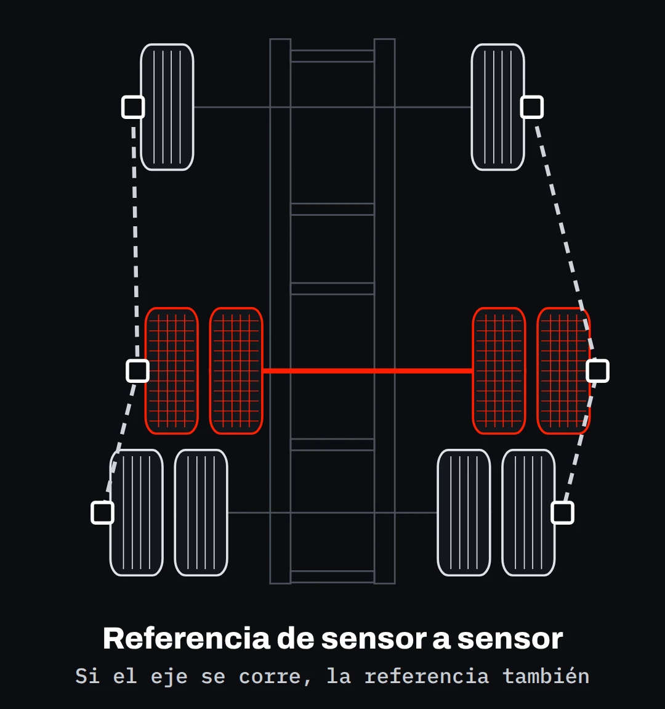
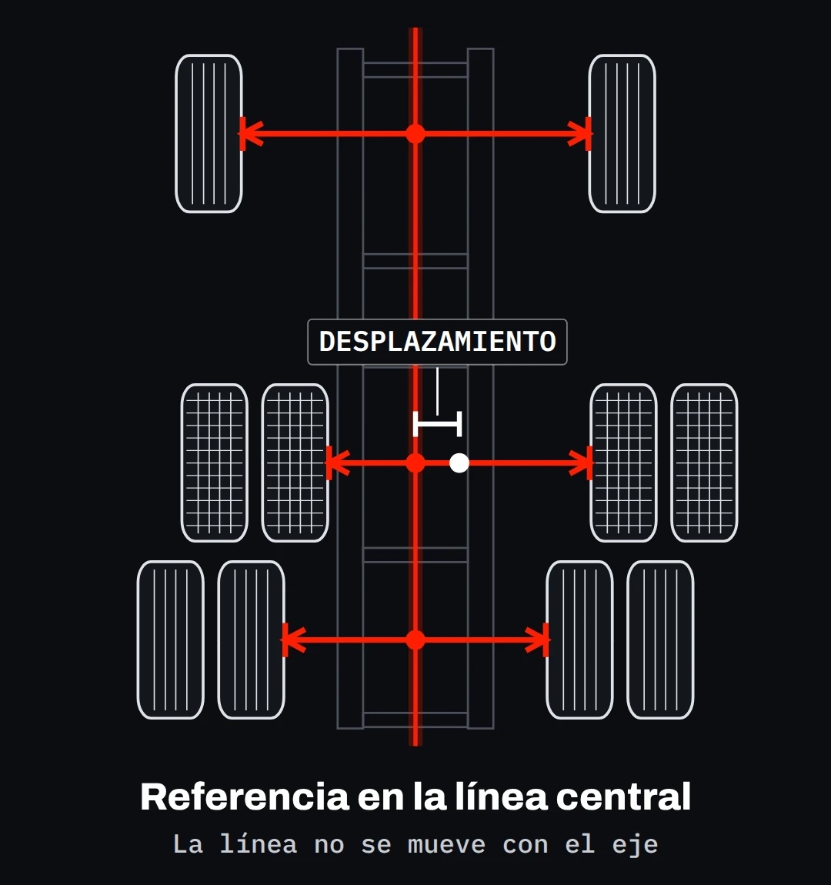

Alineación de camiones con un eje desplazado: por qué importa la referencia
La Josam CV-Aligner mide por cámara y toma como referencia la línea geométrica central del chasis, la misma para todos los ejes. La referencia no va de sensor a sensor: por eso, si un eje está desplazado hacia un costado, la medición no se altera, y ese desplazamiento también se mide.
Video: cómo se alinea un camión

La referencia es lo primero
Toda alineación compara la posición de las ruedas contra algo. En un camión hay varios ejes (en este ejemplo, dirección, tracción y apoyo), así que ese «algo» tiene que servir para todos. La CV-Aligner usa la línea central del chasis.

Qué pasa si un eje está desplazado hacia un costado
Cuando la referencia se arma de sensor a sensor, depende de dónde quedaron las ruedas: si un eje está corrido hacia un costado, la referencia se corre con él.

Con la CV-Aligner la referencia es la línea geométrica central, que no se mueve con el eje. Cada eje se mide respecto de esa misma línea. Un eje desplazado lateralmente no altera la medición, y el valor del desplazamiento forma parte del diagnóstico.

Convergencia: si las ruedas no apuntan derecho
La convergencia indica hacia dónde apuntan las ruedas respecto de la dirección de avance. Cuando no apuntan derecho, la goma se arrastra.

El programa muestra el valor de cada rueda y el total del eje. En la lectura de la imagen, −1,7 a la izquierda y −3,0 a la derecha suman un total de −4,7.

Ejes en escuadra
Además de cada rueda, hay que revisar cómo está parado cada eje: descuadre, paralelismo y desplazamiento. Un eje fuera de escuadra apunta hacia un costado respecto de la línea central.

Qué mide la Josam CV-Aligner
- Convergencia, posición de la caja de dirección, inclinación, descuadre, paralelismo y desplazamiento del eje.
- Caster, KPI, convergencia en giros y giro máximo.
Cómo se trabaja
- Se montan los cabezales de medición en las ruedas; se comunican sin cables con el programa.
- Con el método de rodadura se mide sin levantar los ejes.
- El programa guía el proceso e imprime un informe con los valores antes y después de alinear.
Sirve para camiones, remolques, colectivos y vehículos comerciales livianos. Los rangos y precisiones están en la ficha del equipo, con su ficha técnica en PDF.
Preguntas frecuentes
¿Hay que levantar el camión para medir?
No hace falta: el método de rodadura permite medir sin levantar los ejes.
¿Qué referencia usa la CV-Aligner?
La línea geométrica central del chasis, común a todos los ejes.
¿Un eje desplazado hacia un costado afecta la medición?
No, porque la referencia no va de sensor a sensor sino que es la línea geométrica central. El desplazamiento además se mide.
¿Incluye instalación y capacitación?
En Trivium Pro instalamos el equipo y capacitamos en todo el país. La instalación se cotiza aparte.
Para armar el servicio, mirá cómo ofrecer alineación a flotas y qué es un camión 6x2. Pedí asesoramiento o una cotización.